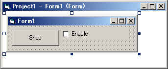
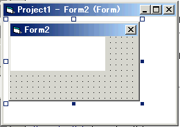

DirectShow関係
４．オリジナルフィルタの作成（その３）
前回のMoFilterに独自のインターフェースをつけ、
VBなどから呼び出せるタイプライブラリを作ってみようと思います。
今回つけるのは以下のメソッドです。
| 名称、引数 | 内容 |
| obj.SetEnable NewValue | フィルタ効果のOn/Ofｆを設定する。NewValueが0ならOff、0以外ならOn。 |
| obj.GetEnable NowValue | フィルタ効果のOn/Off状態を取得する。Long型変数にOffなら0が、Onなら0以外が返る。 |
| obj.GetImage Buffer | フィルタ内のイメージバッファを取得する。BufferにはLong型の配列の先頭要素を指定する。 |
とりあえずこれだけです。肝心のフィルタ効果の内容に関するものがないけど気にしないで（＾＾；；；；
基本的にCOMのインターフェースの作り方になりますので
その辺の資料も含めて見てくださったほうが理解しやすいでしょう。
私のボロもよく見えるでしょうから（笑
まず公開するインターフェースを定義したヘッダファイルを作ります。
IMoFilter.hというヘッダファイルをプロジェクトに追加し、
以下のような内容を記述します。
#ifndef __IMOFILTER__
#define __IMOFILTER__
// IMoFilterインターフェースのGUID
// {B6067441-6208-41cd-AF38-164E33E6C84E}
DEFINE_GUID( IID_IMoFilter,
0xb6067441, 0x6208, 0x41cd, 0xaf, 0x38, 0x16, 0x4e, 0x33, 0xe6, 0xc8, 0x4e);
// IMoFilterインターフェース
DECLARE_INTERFACE_( IMoFilter,IUnknown )
{
STDMETHOD( SetEnable ) ( THIS_ long NewValue ) PURE;
STDMETHOD( GetEnable ) ( THIS_ long *NewValue ) PURE;
STDMETHOD( GetImage ) ( THIS_ long *NewValue ) PURE;
};
#endif
|
まずIMoFilterのGUIDを定義します。（青色部分）
MoFilterフィルタのGUIDとは違うIDを定義します。
（MoFilterフィルタとIMoFilterインターフェースは物が違いますから）
IMoFilterインターフェースの部分（赤色部分）で定義しています。
DECLARE_INTERFACE_でインターフェースを
STDMETHODでメソッドとその引数を定義します。
細かい話になりますが、
インターフェースとは構造体（＝クラス。C++ではクラスも構造体もほとんど同じ）で実現されます。
DECLARE_INTERFACE_やSTDMETHODの定義をみれば
なにをやっているのかはわかるでしょう。
（カーソルを合わせて右クリック、ポップアップメニューから定義位置を表示でみれますから）
せっかくMicrosoftがマクロを用意してくれているので
逆らわないでマクロを使って定義しましょう。
SetEnableはlong型の引数を一つ受け取るように定義し、
GetEnableは値を返すのでポインタで定義します。
GetImageもバッファの先頭アドレスが欲しいのでポインタで定義します。
バッファの領域は呼び出し側で確保しておかなければなりません。
本当はこんな危ない受け渡しはしない方がいいです（＾＾；
せめてバッファのサイズも受け取った方がいいですね。
でCMoFilterにこれを継承させます。
// CmoFilterのクラスID
// {A6A4E64B-6AAA-4838-AF6C-048CCE72924C}
static const GUID CLSID_MoFilter =
{ 0xa6a4e64b, 0x6aaa, 0x4838, { 0xaf, 0x6c, 0x4, 0x8c, 0xce, 0x72, 0x92, 0x4c } };
class CMoFilter : public CTransformFilter ,
public IMoFilter
{
public:
DECLARE_IUNKNOWN; // CUnknownのインターフェース定義
CMoFilter(TCHAR *tszName, LPUNKNOWN pUnk, HRESULT *phr);
virtual ~CMoFilter();
static CUnknown *CreateInstance(LPUNKNOWN punk, HRESULT *phr);
HRESULT CheckInputType(const CMediaType *mtIn);
HRESULT CheckTransform(const CMediaType *mtIn, const CMediaType *mtOut);
HRESULT Transform(IMediaSample *pIn, IMediaSample *pOut);
HRESULT DecideBufferSize( IMemAllocator *pAlloc,ALLOCATOR_PROPERTIES *pProperties);
HRESULT GetMediaType(int iPosition, CMediaType *pMediaType);
HRESULT CompleteConnect( PIN_DIRECTION direction,IPin *pReceivePin );
STDMETHOD(NonDelegatingQueryInterface)(REFIID riid, void **ppv);
STDMETHODIMP SetEnable( long NewValue );
STDMETHODIMP GetEnable( long *NewValue );
STDMETHODIMP GetImage( long *NewValue );
private:
HRESULT MediaCheck(const CMediaType *MediaType);
HRESULT Copy(IMediaSample *Src, IMediaSample *Dst) const;
HRESULT UpdateBitmap(IMediaSample *MediaSample);
long *mImageBuffer;
long mEnable;
long mBuffSize;
|
色付き部分が追加されるところです。
IMoFIlterインターフェースで定義した３つメソッドを実装し
青色部分のNonDelegatingQueryInterfaceをオーバーライドします。
NonDelegatingQueryInterfaceについては後で説明します。
mEnableはフィルタ効果のOn/Offを制御するためのフラグで、
mBuffSizeはイメージを格納するために確保した領域のサイズを保存しておくためのものです。
それぞれのメソッドの実装は以下のようになります。
//////////////////////////////////////////////////////////////////////
// SetEnableメソッド
HRESULT CMoFilter::SetEnable(long NewValue)
{
mEnable=NewValue;
return S_OK;
}
// GetEnableメソッド
HRESULT CMoFilter::GetEnable(long *NewValue)
{
*NewValue=mEnable;
return S_OK;
}
// GetImageメソッド
HRESULT CMoFilter::GetImage(long *NewValue)
{
if( mImageBuffer!=NULL )
{
CopyMemory( (void *)NewValue,(void *)mImageBuffer,mBuffSize );
}
return S_OK;
}
|
SetEnableはmEnableの値を設定し、
GetEnableはmEnableの値を返しているだけです。
GetImageは受け取ったポインタにバッファの内容を転送しています。
見ての通りいい加減なチェックしかしていないです(^^;
mEnableはコンストラクタで初期化して、
mBuffSizeはCompleteConnect()で領域を確保したさいに保存しておきます。
// イメージ保存用バッファの確保 mBuffSize=ImgX*ImgY*sizeof(long); mImageBuffer=new long[ImgX*ImgY]; memset( mImageBuffer,0,mBuffSize ); |
またmEnableによって効果をOn/OffするのはUpdateBitmap()に
if文を一つ追加して制御しています。
// イメージの変更
BYTE *b0=(BYTE *)mImageBuffer;
BYTE *b1=BmpBuff;
long d0,d1,dd;
long z;
if( mEnable )
{
for( z=0;z<BmpBuffSize;z++ )
{
d0=*b0;
d1=*b1;
dd=(d0*95+d1*5)/100;
*b1=(BYTE)dd;
b0++;
b1++;
}
}
|
これでメソッドの実装は終わりです。
最後に残しておいたNonDelegatingQueryInterfaceですが、
これはフィルタを使うアプリが独自インターフェースを要求したときに
そのポインタを返す関数になります。
要は「ｘｘというインターフェース（のポインタ）ある？」って問い合わせがあったら
「はい、これね～」か「そんなインタフェースしらんよ～」って返すのが仕事です。
// 独自インターフェースの提供
STDMETHODIMP CMoFilter::NonDelegatingQueryInterface(REFIID riid, void **ppv)
{
// フィルタのインターフェース
if( riid==IID_IMoFilter)
return GetInterface( (IMoFilter *)this,ppv );
return CTransformFilter::NonDelegatingQueryInterface( riid,ppv );
}
|
引数のriidがIMoFilter.hで定義したIMoFilter用のGUID（IID_IMoFilter）だったら
そのインターフェース（のポインタ）を返します。
これでフィルタに独自インターフェースがつきました。
デフォルトでmEnableが0になっているので
こんどはGraphEditで追加してもそのままでは効果を発揮しなくなります。
最後にVBから今回追加したメソッドを使えるようにするタイプライブラリを作成するために
インターフェース定義ファイル(IMoFilter.idl)を作ります。
IMoFilter.hと同じようにプロジェクトに IMoFilter.idl
というファイルを追加し、
以下のように記述します。
[
uuid(F85795BB-AD3A-408e-9927-653119A35F9A),
version(1.0),
helpstring("MoFilter control type library")
]
library MoFilterLib
{
importlib("stdole2.tlb");
[
odl,
uuid(b6067441-6208-41cd-af38-164e33e6c84e),
helpstring("IMoFilter interface")
]
interface IMoFilter : IUnknown {
HRESULT _stdcall SetEnable( [in] long NewValue);
HRESULT _stdcall GetEnable( [out] long* NewValue);
HRESULT _stdcall GetImage( [out] long* NewValue);
};
};
|
IDLファイルの書き方について全部説明すると本が３冊ぐらい書けちゃいますので
簡便させてもらいますが今回はこのような定義になります。
（うそです。私が全部説明できるほど知らないだけです。
MSDNにちゃんと説明があります、英語だけど・・・）
青色部分のUUIDはタイプライブラリのGUIDになります。
またUUIDGEN.EXEで作ってください。
赤色部分のuuidはIMoFilterのGUIDになります。
IMoFilter.hで定義した内容を書きます。
（書式がちがうけど縮めただけです。同じ値でないといけません）
library MoFilterLibの行でこのタイプライブラリの名前を定義します。
interface IMoFilter : IUnknownのところでインターフェースを定義します。
その中で各メソッドを列挙します。
引数の[in]は値を渡すもので、[out]は値が戻されるものです。
ちなみに[out,retval]とすると戻り値になります。
これでコンパイルすれば、新しいMoFilter.axとIMoFilter.tblが出来上がります。
全ソースはこちらからダウンロードできます。
MoFilter.axはregsvr32.exeで登録し（前回登録してあればOK）、
IMoFilter.tblはVBの参照設定で指定します。
続いてVBでの使い方を説明します。
VBだけで使いたい方はこちらからフィルタのプログラムと
タイプライブラリだけダウンロードして登録してください。
（サンプルのVBソースも入ってます）
コマンドプロンプトを開いてダウンロードしたファイルを適当なディレクトリに解凍して
以下のコマンドを入力します。
regsvr32 MoFilter.ax
タイプライブラリの方は、VBを起動して参照設定の画面で
「参照」ボタンを押して、IMoFilter.tblを選択してください。
（次回からは一覧にでるようになります）
早速ですが、新しいMoFilterを使うプログラムは以下のようになります。
フォームが２つあります。
form1

ボタンの名前：btn_Snap
チェックボックスの名前：chk_Enable
form2

PictureBoxが一つあり、名前はPicture1
form1のコードは以下のようになります。
Option Explicit
'カメラのフィルタ名
Private Const CAMERA_FILTER_NAME$ = "STV0680 Camera" 'Che-es! SPYZ
Private Const CAMERA_OUTPUTPIN_NAME$ = "~Capture"
'グラフ
Private mGrp As QuartzTypeLib.FilgraphManager
'MoFilterインターフェース
Private mMoFlt As MoFilterLib.IMoFilter
'フォームロード時
Private Sub Form_Load()
'グラフマネージャの作成
Set mGrp = New QuartzTypeLib.FilgraphManager
'グラフにキャプチャ（カメラ）フィルタを追加する
Dim cameraflt As QuartzTypeLib.IFilterInfo
Set cameraflt = AddFilter(mGrp, CAMERA_FILTER_NAME$)
'MoFilterの追加
Set mMoFlt = AddFilter(mGrp, "MoFilter").Filter
'カメラの出力ピンを取得
Dim camerapin As QuartzTypeLib.IPinInfo
cameraflt.FindPin CAMERA_OUTPUTPIN_NAME$, camerapin
'カメラの出力ピンからフィルタを接続し、グラフを構築する
camerapin.Render
'再生
mGrp.Run
End Sub
'レジストリに登録されているフィルタをグラフに追加する
Public Function AddFilter(ByRef Grp As QuartzTypeLib.FilgraphManager, ByVal FilterName$) As IFilterInfo
Dim regflt As QuartzTypeLib.IRegFilterInfo
For Each regflt In Grp.RegFilterCollection
If regflt.Name = FilterName$ Then
regflt.Filter AddFilter
Exit Function
End If
Next
End Function
'Enableボタン
Private Sub chk_Enable_Click()
Dim flg As Long
mMoFlt.GetEnable flg
flg = Not flg
mMoFlt.SetEnable flg
End Sub
'Snapボタン
Private Sub btn_Snap_Click()
'イメージのサイズをIBasicVideoから取得
Dim bv As QuartzTypeLib.IBasicVideo
Set bv = mGrp
Dim wx As Long, wy As Long
wx = bv.VideoWidth
wy = bv.VideoHeight
'領域を確保
Dim buf() As Long, sz As Long
sz = wx * wy
ReDim buf(sz * 4 - 1)
'イメージの取得
mMoFlt.GetImage buf(0)
'別フォームに描画
Dim frm As New Form2
frm.Picture1.Move 0, 0, wx * Screen.TwipsPerPixelX, wy * Screen.TwipsPerPixelY
frm.Move frm.Left, frm.Top, _
(frm.Width - frm.ScaleWidth) + frm.Picture1.Width, _
(frm.Height - frm.ScaleHeight) + frm.Picture1.Height
WriteBitmap frm.Picture1, buf(), wx, wy
frm.Show
End Sub
|
form2のコードはありません。（イメージを表示するだけなので）
詳細を説明します。
Option Explicit 'カメラのフィルタ名 Private Const CAMERA_FILTER_NAME$ = "STV0680 Camera" 'Che-es! SPYZ Private Const CAMERA_OUTPUTPIN_NAME$ = "~Capture" 'グラフ Private mGrp As QuartzTypeLib.FilgraphManager 'MoFilterインターフェース Private mMoFlt As MoFilterLib.IMoFilter 'フォームロード時
Private Sub Form_Load()
'グラフマネージャの作成
Set mGrp = New QuartzTypeLib.FilgraphManager
'グラフにキャプチャ（カメラ）フィルタを追加する
Dim cameraflt As QuartzTypeLib.IFilterInfo
Set cameraflt = AddFilter(mGrp, CAMERA_FILTER_NAME$)
'MoFilterの追加
Set mMoFlt = AddFilter(mGrp, "MoFilter").Filter
'カメラの出力ピンを取得
Dim camerapin As QuartzTypeLib.IPinInfo
cameraflt.FindPin CAMERA_OUTPUTPIN_NAME$, camerapin
'カメラの出力ピンからフィルタを接続し、グラフを構築する
camerapin.Render
'再生
mGrp.Run
End Sub
|
VBでライブ映像を表示の場合とほとんど同じです。
（ただし、動画はフォーム外で表示させています）
Form_Load()でグラフを作る際に、
AddFilter関数でMoFilterフィルタをグラフに追加していますが、
これの戻り値（IFilterInfo）のFilterメソッドの戻り値（ちょっとややこしい）を
モジュールセクションで定義してあるImoFilterの変数mMoFltに保存しておきます。
'Enableボタン
Private Sub chk_Enable_Click()
Dim flg As Long
mMoFlt.GetEnable flg
flg = Not flg
mMoFlt.SetEnable flg
End Sub
|
チェックボックスをクリックした際の処理になります。
本来ならchk_Enableコントロールの値を使うべきなんですが、
むりやり全メソッドを使うためにこんなコードにしています（＾＾；
GetEnableでLong型の変数flgに現在の状態を取得し、
SetEnableでそれを反転した値を設定します。
'Snapボタン
Private Sub btn_Snap_Click()
'イメージのサイズをIBasicVideoから取得
Dim bv As QuartzTypeLib.IBasicVideo
Set bv = mGrp
Dim wx As Long, wy As Long
wx = bv.VideoWidth
wy = bv.VideoHeight
'領域を確保
Dim buf() As Long, sz As Long
sz = wx * wy
ReDim buf(sz * 4 - 1)
'イメージの取得
mMoFlt.GetImage buf(0)
'別フォームに描画
Dim frm As New Form2
frm.Picture1.Move 0, 0, wx * Screen.TwipsPerPixelX, wy * Screen.TwipsPerPixelY
frm.Move frm.Left, frm.Top, _
(frm.Width - frm.ScaleWidth) + frm.Picture1.Width, _
(frm.Height - frm.ScaleHeight) + frm.Picture1.Height
WriteBitmap frm.Picture1, buf(), wx, wy
frm.Show
End Sub
|
Snapボタンを押した時の処理になります。
まずIBasicVideoオブジェクトからイメージのサイズwx,wyを取得します。
これからイメージを取得する領域のサイズを計算します。
サイズはピクセル数（縦サイズ×横サイズ）になります。
このサイズ分をLong型変数bufで確保しGetImageメソッドを呼び出します。
このとき配列の先頭要素を渡します。
これで配列bufに1ピクセル毎の色情報が縦×横サイズ分だけ入ります。
最後は別フォームを作ってそこにあるピクチャーボックスに画像を表示します。
GetImageで取得できるイメージはDIB形式で
Long型の要素１つに1ピクセルの色情報が入ります。
VBのRGB関数などで取得できるカラー値とはRとBが逆転してますので注意してください。
また一番したのラインから格納されてます。
WriteBitmapという関数の中でSetDIBitsToDeviceというAPIを使って描画しています。
(この辺のコードはサンプルソースを参照ください）